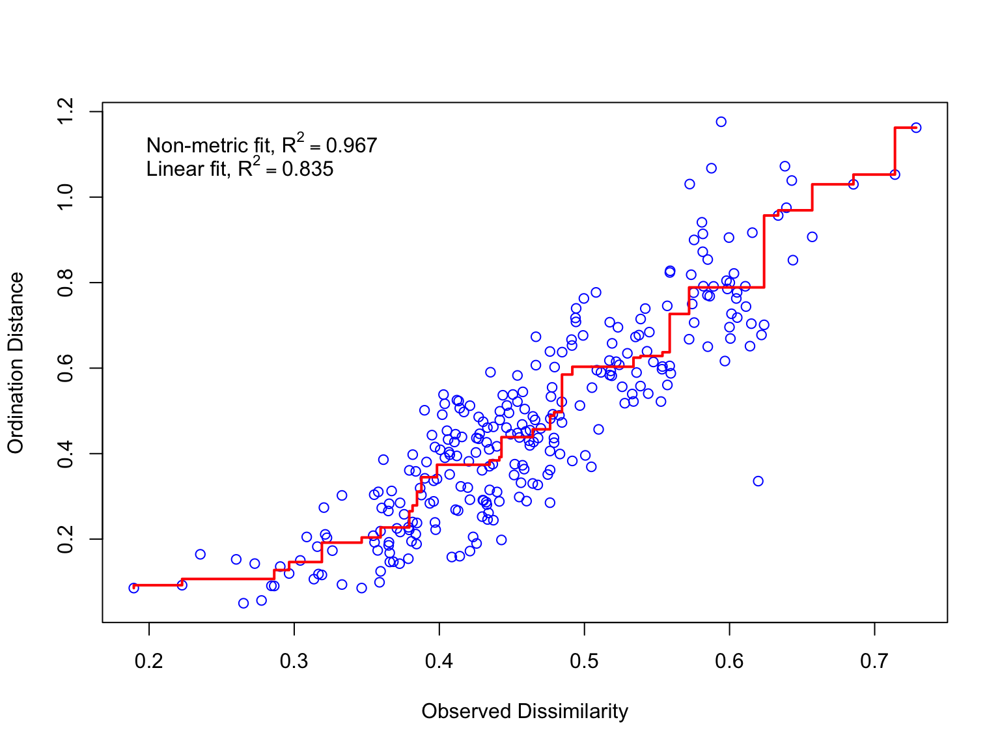

Non-metric Multidimensional Scaling (NMDS)
Radchuk Viktoriia
2023-03-29
NMDS
- Non-metric ordination technique. Relies on the
ranks of the dissimilarities.
- No restriction on types of the distance among
objects, i.e. can use any dissimilarity measure among objects.
- No linear relations among descriptors
assumed.
- Aims to locate objects in low dimensional
ordination space (pre-specified by the user, usually 2 or 3 axes) in
such a way that the Euclidean distances between these objects will
reflect the dissimilarities among the objects in original
multi-dimensional space.
- Iterative algorithm that tries to find best
location of the objects in the reduced ordination space. Each run may
have a different solution.
Main differences to other ordination approaches
- Iterative algorithm (no analytical solution)
- The position of objects in only a limited number of
axes is calculated, whereas in most ordination techniques the positions
along many axes are calculated but only a few are visualised.
- Not based on eigenvalue decomposition, so that the
first axis does not represent the largest variation in the data. Thus,
the axes may be arbitrarily rotated or inverted.
Algorithm (simplified)
- Specify the number \(m\) of dimensions sought.
- Construct initial configuration of all objects in
\(m\) dimensions, this will be a
starting point for the iterative algorithm. The output may depend on
this step (remember ‘butterfly effect’). Ways to chose initial
configuration: generate randomly or use the results of PCoA
ordination.
- An iterative algorithm tries to position the
objects in a given number of dimensions such as to decrease a so-called
‘stress value’. Stress value measures how far the distances in the
reduced ordination space are from monotonic of the distances in the
original dissimilarity matrix. Stress value ranges between 0 and 1, the
lower stress value, the better.
- The algorithm stops when the new iteration cannot
lower the stress value or when the stress value reaches a pre-determined
value (this is a tolerated lack-of-fit).
- Most NMDS softwares rotate the final solution using
PCA, to help the interpretation.
Stress
\[Stress =\sqrt{\frac{\sum_{h,
i}(d_{hi}-\hat{d}_{hi})^2}{\sum_{h, i}d_{hi}^2}}\] where \(d_{hi}\) is the ordinated distances between
objects h and i;
\(\hat{d}_{hi}\) is the predicted
distances from the regression of the ordinated distances and those in
the original distance matrix.
Stress thus indicates lack of fit of the resulting ordination to the
original distances.
‘Rules of thumb’ for stress value
- stress > 0.2 indicates a rather non-satisfactory
result,
- stress > 0.3 the ordination is said ‘to be
generated arbitrary, independently of the dissimilarities in the
original matrix’,
- stress < 0.1 indicates good fit between the
original dissimilarities and the resulting ordination.
BUT: stress increases with the number of objects and number of
descriptors. So, one cannot just compare stress values among data sets
with different number of objects.
Disadvantages of NMDS
- Computationally intensive (this is what arguably
limited its use still 20 years ago but becomes of no importance
nowadays)
- Since it is an optimisation algorithm, it may fail
to find the global best solution and instead be stuck in local minima
(this is less of an issue nowadays when multiple rpeetitions can be run
to check whether the algorithm indeed converged on the global
optimum)
Application: Vegetation data
We use the same plant cover data taken from 24 sites on in total 44
species.
data(varespec)
str(varespec)
## 'data.frame': 24 obs. of 44 variables:
## $ Callvulg: num 0.55 0.67 0.1 0 0 ...
## $ Empenigr: num 11.13 0.17 1.55 15.13 12.68 ...
## $ Rhodtome: num 0 0 0 2.42 0 0 1.55 0 0.35 0.07 ...
## $ Vaccmyrt: num 0 0.35 0 5.92 0 ...
## $ Vaccviti: num 17.8 12.1 13.5 16 23.7 ...
## $ Pinusylv: num 0.07 0.12 0.25 0 0.03 0.12 0.1 0.1 0.05 0.12 ...
## $ Descflex: num 0 0 0 3.7 0 0.02 0.78 0 0.4 0 ...
## $ Betupube: num 0 0 0 0 0 0 0.02 0 0 0 ...
## $ Vacculig: num 1.6 0 0 1.12 0 0 2 0 0.2 0 ...
## $ Diphcomp: num 2.07 0 0 0 0 0 0 0 0 0.07 ...
## $ Dicrsp : num 0 0.33 23.43 0 0 ...
## $ Dicrfusc: num 1.62 10.92 0 3.63 3.42 ...
## $ Dicrpoly: num 0 0.02 1.68 0 0.02 0.02 0 0.23 0.2 0 ...
## $ Hylosple: num 0 0 0 6.7 0 0 0 0 9.97 0 ...
## $ Pleuschr: num 4.67 37.75 32.92 58.07 19.42 ...
## $ Polypili: num 0.02 0.02 0 0 0.02 0.02 0 0 0 0 ...
## $ Polyjuni: num 0.13 0.23 0.23 0 2.12 1.58 0 0.02 0.08 0.02 ...
## $ Polycomm: num 0 0 0 0.13 0 0.18 0 0 0 0 ...
## $ Pohlnuta: num 0.13 0.03 0.32 0.02 0.17 0.07 0.1 0.13 0.07 0.03 ...
## $ Ptilcili: num 0.12 0.02 0.03 0.08 1.8 0.27 0.03 0.1 0.03 0.25 ...
## $ Barbhatc: num 0 0 0 0.08 0.02 0.02 0 0 0 0.07 ...
## $ Cladarbu: num 21.73 12.05 3.58 1.42 9.08 ...
## $ Cladrang: num 21.47 8.13 5.52 7.63 9.22 ...
## $ Cladstel: num 3.5 0.18 0.07 2.55 0.05 ...
## $ Cladunci: num 0.3 2.65 8.93 0.15 0.73 0.25 2.38 0.82 0.05 0.95 ...
## $ Cladcocc: num 0.18 0.13 0 0 0.08 0.1 0.17 0.15 0.02 0.17 ...
## $ Cladcorn: num 0.23 0.18 0.2 0.38 1.42 0.25 0.13 0.05 0.03 0.05 ...
## $ Cladgrac: num 0.25 0.23 0.48 0.12 0.5 0.18 0.18 0.22 0.07 0.23 ...
## $ Cladfimb: num 0.25 0.25 0 0.1 0.17 0.1 0.2 0.22 0.1 0.18 ...
## $ Cladcris: num 0.23 1.23 0.07 0.03 1.78 0.12 0.2 0.17 0.02 0.57 ...
## $ Cladchlo: num 0 0 0.1 0 0.05 0.05 0.02 0 0 0.02 ...
## $ Cladbotr: num 0 0 0.02 0.02 0.05 0.02 0 0 0.02 0.07 ...
## $ Cladamau: num 0.08 0 0 0 0 0 0 0 0 0 ...
## $ Cladsp : num 0.02 0 0 0.02 0 0 0.02 0.02 0 0.07 ...
## $ Cetreric: num 0.02 0.15 0.78 0 0 0 0.02 0.18 0 0.18 ...
## $ Cetrisla: num 0 0.03 0.12 0 0 0 0 0.08 0.02 0.02 ...
## $ Flavniva: num 0.12 0 0 0 0.02 0.02 0 0 0 0 ...
## $ Nepharct: num 0.02 0 0 0 0 0 0 0 0 0 ...
## $ Stersp : num 0.62 0.85 0.03 0 1.58 0.28 0 0.03 0.02 0.03 ...
## $ Peltapht: num 0.02 0 0 0.07 0.33 0 0 0 0 0.02 ...
## $ Icmaeric: num 0 0 0 0 0 0 0 0.07 0 0 ...
## $ Cladcerv: num 0 0 0 0 0 0 0 0 0 0 ...
## $ Claddefo: num 0.25 1 0.33 0.15 1.97 0.37 0.15 0.67 0.08 0.47 ...
## $ Cladphyl: num 0 0 0 0 0 0 0 0 0 0 ...
Run NMDS
nmds_veg <- metaMDS(varespec, distance = 'bray', k = 2, wascores = TRUE)
## Square root transformation
## Wisconsin double standardization
## Run 0 stress 0.1843196
## Run 1 stress 0.2028828
## Run 2 stress 0.1843196
## ... New best solution
## ... Procrustes: rmse 2.363484e-05 max resid 9.466593e-05
## ... Similar to previous best
## Run 3 stress 0.1825658
## ... New best solution
## ... Procrustes: rmse 0.04160567 max resid 0.1517021
## Run 4 stress 0.22964
## Run 5 stress 0.2057245
## Run 6 stress 0.2114447
## Run 7 stress 0.2143613
## Run 8 stress 0.2104573
## Run 9 stress 0.1982376
## Run 10 stress 0.18458
## Run 11 stress 0.1955838
## Run 12 stress 0.2093086
## Run 13 stress 0.210541
## Run 14 stress 0.2425948
## Run 15 stress 0.2328559
## Run 16 stress 0.1976152
## Run 17 stress 0.2044973
## Run 18 stress 0.222107
## Run 19 stress 0.2419378
## Run 20 stress 0.1969805
## *** Best solution was not repeated -- monoMDS stopping criteria:
## 18: stress ratio > sratmax
## 2: scale factor of the gradient < sfgrmin
Results NMDS
##
## Call:
## metaMDS(comm = varespec, distance = "bray", k = 2, wascores = TRUE)
##
## global Multidimensional Scaling using monoMDS
##
## Data: wisconsin(sqrt(varespec))
## Distance: bray
##
## Dimensions: 2
## Stress: 0.1825658
## Stress type 1, weak ties
## Best solution was not repeated after 20 tries
## The best solution was from try 3 (random start)
## Scaling: centring, PC rotation, halfchange scaling
## Species: expanded scores based on 'wisconsin(sqrt(varespec))'
## MDS1 MDS2
## 18 -0.121510530 -0.121113726
## 15 0.001256716 -0.099468382
## 24 0.238018637 0.441369050
## 27 0.585078056 -0.167973326
## 23 0.142354701 0.046650347
## 19 0.092358135 0.048308717
## 22 0.188031113 -0.146116888
## 16 0.045734261 -0.134341989
## 28 0.530342561 -0.031991241
## 13 -0.077103053 -0.047990759
## 14 -0.026047363 -0.249635566
## 20 0.077068825 -0.049523762
## 25 0.229730840 -0.458482127
## 7 -0.267692342 -0.213804779
## 5 -0.454682128 -0.332721623
## 6 -0.196658539 -0.045775960
## 3 -0.285968762 -0.123406391
## 4 -0.374119432 0.007891848
## 2 -0.473621322 0.344619702
## 9 -0.116147487 0.167127294
## 12 0.015795839 0.303685750
## 10 -0.165001246 0.237266955
## 11 -0.139570728 0.377605574
## 21 0.552353248 0.247821281
## attr(,"centre")
## [1] TRUE
## attr(,"pc")
## [1] TRUE
## attr(,"halfchange")
## [1] TRUE
## attr(,"internalscaling")
## [1] 2.739442
Interpret the results
## Length Class Mode
## nobj 1 -none- numeric
## nfix 1 -none- numeric
## ndim 1 -none- numeric
## ndis 1 -none- numeric
## ngrp 1 -none- numeric
## diss 276 -none- numeric
## iidx 276 -none- numeric
## jidx 276 -none- numeric
## xinit 48 -none- numeric
## istart 1 -none- numeric
## isform 1 -none- numeric
## ities 1 -none- numeric
## iregn 1 -none- numeric
## iscal 1 -none- numeric
## maxits 1 -none- numeric
## sratmx 1 -none- numeric
## strmin 1 -none- numeric
## sfgrmn 1 -none- numeric
## dist 276 -none- numeric
## dhat 276 -none- numeric
## points 48 -none- numeric
## stress 1 -none- numeric
## grstress 1 -none- numeric
## iters 1 -none- numeric
## icause 1 -none- numeric
## call 5 -none- call
## model 1 -none- character
## distmethod 1 -none- character
## distcall 1 -none- character
## data 1 -none- character
## distance 1 -none- character
## converged 1 -none- numeric
## tries 1 -none- numeric
## bestry 1 -none- numeric
## engine 1 -none- character
## species 88 -none- numeric
species: contains the ordination of species (added
by the function after NMDS is performed, using weighted averages).
tries: number of starts with different initial
conditions.
bestry: a “try” with the lowest stress value.
Visualize the results
plot(nmds_veg, display = "sites", type = 'n')
text(nmds_veg, disp="sites", col='black')
text(nmds_veg, disp="spec", col='red', cex = 0.8)

Shepard plot for NMDS
A plot of ordination distances and monotone or linear fit line
against original dissimilarities.

Non-metric \(R^2 = 1 -
Stress^2\);
\(R^2\) for the linear fit shows the
squared correlation between fitted values and ordination distances.
Choice of the number of dimensions
Balance between the interpretability of the results (the fewer axes,
the easier to interpret) and the goodness of fit.
So-called ‘scree’ plot can be used to visualise the change in stress
value with increasing number of dimensions, to facilitate the choice of
the number of dimensions.
The function dimcheckMDS() from goeveg package
allows to fit automatically NMDS with different number of specified
dimensions, and produce such a scree plot.
Scree plot
dimcheckMDS(varespec, k = 5)
## Square root transformation
## Wisconsin double standardization
## Run 0 stress 0.3648452
## Run 1 stress 0.428999
## Run 2 stress 0.3580145
## ... New best solution
## ... Procrustes: rmse 0.1297013 max resid 0.4704391
## Run 3 stress 0.4432812
## Run 4 stress 0.4332277
## Run 5 stress 0.5463723
## Run 6 stress 0.3788219
## Run 7 stress 0.5498084
## Run 8 stress 0.5324845
## Run 9 stress 0.5518041
## Run 10 stress 0.5527625
## Run 11 stress 0.552283
## Run 12 stress 0.5503031
## Run 13 stress 0.5467687
## Run 14 stress 0.4532514
## Run 15 stress 0.5231277
## Run 16 stress 0.5466577
## Run 17 stress 0.4209014
## Run 18 stress 0.411385
## Run 19 stress 0.5438345
## Run 20 stress 0.4386834
## *** Best solution was not repeated -- monoMDS stopping criteria:
## 20: scale factor of the gradient < sfgrmin
## Square root transformation
## Wisconsin double standardization
## Run 0 stress 0.1843196
## Run 1 stress 0.2414482
## Run 2 stress 0.195049
## Run 3 stress 0.1869637
## Run 4 stress 0.1825658
## ... New best solution
## ... Procrustes: rmse 0.04163213 max resid 0.1518343
## Run 5 stress 0.18458
## Run 6 stress 0.210871
## Run 7 stress 0.1869637
## Run 8 stress 0.2511325
## Run 9 stress 0.195049
## Run 10 stress 0.2282745
## Run 11 stress 0.202116
## Run 12 stress 0.1948413
## Run 13 stress 0.1974419
## Run 14 stress 0.1955837
## Run 15 stress 0.195584
## Run 16 stress 0.1955839
## Run 17 stress 0.1974408
## Run 18 stress 0.18458
## Run 19 stress 0.1955836
## Run 20 stress 0.2340461
## *** Best solution was not repeated -- monoMDS stopping criteria:
## 18: stress ratio > sratmax
## 2: scale factor of the gradient < sfgrmin
## Square root transformation
## Wisconsin double standardization
## Run 0 stress 0.1176768
## Run 1 stress 0.1151672
## ... New best solution
## ... Procrustes: rmse 0.05464634 max resid 0.1984661
## Run 2 stress 0.1151667
## ... New best solution
## ... Procrustes: rmse 0.0004572026 max resid 0.001651435
## ... Similar to previous best
## Run 3 stress 0.1418169
## Run 4 stress 0.117676
## Run 5 stress 0.1151671
## ... Procrustes: rmse 0.0003804067 max resid 0.001388534
## ... Similar to previous best
## Run 6 stress 0.117676
## Run 7 stress 0.1151671
## ... Procrustes: rmse 0.000634559 max resid 0.002313222
## ... Similar to previous best
## Run 8 stress 0.1151668
## ... Procrustes: rmse 0.0004574587 max resid 0.001669643
## ... Similar to previous best
## Run 9 stress 0.115167
## ... Procrustes: rmse 0.0005611745 max resid 0.002049637
## ... Similar to previous best
## Run 10 stress 0.1359239
## Run 11 stress 0.1176761
## Run 12 stress 0.115167
## ... Procrustes: rmse 0.0005918046 max resid 0.002172513
## ... Similar to previous best
## Run 13 stress 0.1176763
## Run 14 stress 0.1176761
## Run 15 stress 0.1151668
## ... Procrustes: rmse 0.0004037562 max resid 0.001479637
## ... Similar to previous best
## Run 16 stress 0.1151668
## ... Procrustes: rmse 0.0004177966 max resid 0.00150872
## ... Similar to previous best
## Run 17 stress 0.117677
## Run 18 stress 0.1201571
## Run 19 stress 0.1151666
## ... New best solution
## ... Procrustes: rmse 0.0001068357 max resid 0.0003905248
## ... Similar to previous best
## Run 20 stress 0.115167
## ... Procrustes: rmse 0.000480352 max resid 0.001705324
## ... Similar to previous best
## *** Best solution repeated 2 times
## Square root transformation
## Wisconsin double standardization
## Run 0 stress 0.07735491
## Run 1 stress 0.07735506
## ... Procrustes: rmse 0.001105078 max resid 0.003434675
## ... Similar to previous best
## Run 2 stress 0.07735443
## ... New best solution
## ... Procrustes: rmse 0.0006864916 max resid 0.002430179
## ... Similar to previous best
## Run 3 stress 0.07735467
## ... Procrustes: rmse 0.0008350287 max resid 0.002488573
## ... Similar to previous best
## Run 4 stress 0.07735444
## ... Procrustes: rmse 0.0001783425 max resid 0.0005525421
## ... Similar to previous best
## Run 5 stress 0.07735471
## ... Procrustes: rmse 0.0004020476 max resid 0.001138804
## ... Similar to previous best
## Run 6 stress 0.07735468
## ... Procrustes: rmse 0.0002274979 max resid 0.0007193148
## ... Similar to previous best
## Run 7 stress 0.07735471
## ... Procrustes: rmse 0.0007571571 max resid 0.002274256
## ... Similar to previous best
## Run 8 stress 0.07740028
## ... Procrustes: rmse 0.00498777 max resid 0.01507104
## Run 9 stress 0.0859073
## Run 10 stress 0.07735469
## ... Procrustes: rmse 0.0003162033 max resid 0.0009755773
## ... Similar to previous best
## Run 11 stress 0.07735448
## ... Procrustes: rmse 0.000568742 max resid 0.001883383
## ... Similar to previous best
## Run 12 stress 0.07735472
## ... Procrustes: rmse 0.0005796127 max resid 0.001778546
## ... Similar to previous best
## Run 13 stress 0.07735472
## ... Procrustes: rmse 0.0008925003 max resid 0.002664187
## ... Similar to previous best
## Run 14 stress 0.07735488
## ... Procrustes: rmse 0.0008308151 max resid 0.002574698
## ... Similar to previous best
## Run 15 stress 0.07735466
## ... Procrustes: rmse 0.0008664391 max resid 0.002580696
## ... Similar to previous best
## Run 16 stress 0.07735479
## ... Procrustes: rmse 0.0003693972 max resid 0.001099493
## ... Similar to previous best
## Run 17 stress 0.07735498
## ... Procrustes: rmse 0.0009555912 max resid 0.002820731
## ... Similar to previous best
## Run 18 stress 0.07735497
## ... Procrustes: rmse 0.0002635333 max resid 0.0007617388
## ... Similar to previous best
## Run 19 stress 0.07735476
## ... Procrustes: rmse 0.0007705376 max resid 0.002370179
## ... Similar to previous best
## Run 20 stress 0.08210097
## *** Best solution repeated 16 times
## Square root transformation
## Wisconsin double standardization
## Run 0 stress 0.06181158
## Run 1 stress 0.05942764
## ... New best solution
## ... Procrustes: rmse 0.0713444 max resid 0.2094971
## Run 2 stress 0.06392596
## Run 3 stress 0.05942831
## ... Procrustes: rmse 0.0003949556 max resid 0.001019526
## ... Similar to previous best
## Run 4 stress 0.0594337
## ... Procrustes: rmse 0.002265778 max resid 0.005224485
## ... Similar to previous best
## Run 5 stress 0.05942788
## ... Procrustes: rmse 0.0004227112 max resid 0.0009411013
## ... Similar to previous best
## Run 6 stress 0.05986727
## ... Procrustes: rmse 0.04380406 max resid 0.1277992
## Run 7 stress 0.0618382
## Run 8 stress 0.05986176
## ... Procrustes: rmse 0.0433188 max resid 0.1259994
## Run 9 stress 0.05942786
## ... Procrustes: rmse 0.0006891111 max resid 0.001462417
## ... Similar to previous best
## Run 10 stress 0.05985814
## ... Procrustes: rmse 0.04287859 max resid 0.1259879
## Run 11 stress 0.05944099
## ... Procrustes: rmse 0.002643809 max resid 0.006109139
## ... Similar to previous best
## Run 12 stress 0.05942796
## ... Procrustes: rmse 0.0006754525 max resid 0.001874258
## ... Similar to previous best
## Run 13 stress 0.06196945
## Run 14 stress 0.05942817
## ... Procrustes: rmse 0.001166614 max resid 0.002864929
## ... Similar to previous best
## Run 15 stress 0.05942771
## ... Procrustes: rmse 0.0003143357 max resid 0.0006706574
## ... Similar to previous best
## Run 16 stress 0.05942841
## ... Procrustes: rmse 0.0004930788 max resid 0.0009551638
## ... Similar to previous best
## Run 17 stress 0.06038614
## Run 18 stress 0.06039013
## Run 19 stress 0.05994577
## Run 20 stress 0.05942792
## ... Procrustes: rmse 0.0006793185 max resid 0.001312018
## ... Similar to previous best
## *** Best solution repeated 10 times

## [1] 0.35801455 0.18256581 0.11516663 0.07735443 0.05942764
Add supplementary predictor to NMDS
We want to test how the proportion of bare soil and the amount of N,
P and K correlate with the ordinated samples on two dimensions.
data(varechem)
suppl.veg <- envfit(nmds_veg ~ Baresoil + P + N + K, data= varechem, perm = 999)
suppl.veg
##
## ***VECTORS
##
## NMDS1 NMDS2 r2 Pr(>r)
## Baresoil 0.92491 -0.38020 0.2508 0.058 .
## P 0.61968 0.78485 0.1938 0.098 .
## N -0.05728 -0.99836 0.2536 0.053 .
## K 0.76642 0.64234 0.1809 0.124
## ---
## Signif. codes: 0 '***' 0.001 '**' 0.01 '*' 0.05 '.' 0.1 ' ' 1
## Permutation: free
## Number of permutations: 999
Plot supplementary predictor on NMDS
plot(nmds_veg, display = "sites", type = 'n')
text(nmds_veg, disp="sites", col='black')
text(nmds_veg, disp="spec", col='red', cex = 0.8)
plot(suppl.veg)

Check-up
- What are the advantages of NMDS compared to other
ordination approaches?
- Is testing supplementary variables in NMDS a proper
statistical test? If so, what is it testing?